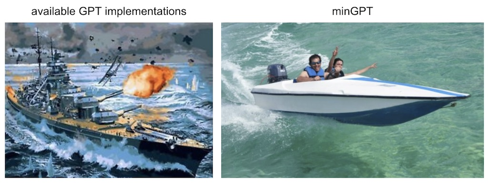

minGPT

A PyTorch re-implementation of GPT training. minGPT tries to be small, clean, interpretable and educational, as most of the currently available ones are a bit sprawling. GPT is not a complicated model and this implementation is appropriately about 300 lines of code, including boilerplate and a totally unnecessary custom causal self-attention module. Anyway, all that's going on is that a sequence of indices goes into a sequence of transformer blocks, and a probability distribution of the next index comes out. The rest of the complexity is just being clever with batching (both across examples and over sequence length) so that training is efficient.
The core minGPT "library" (hah) is two files: mingpt/model.py contains the actual Transformer model definition and mingpt/trainer.py is (GPT-independent) PyTorch boilerplate that trains the model. The attached Jupyter notebooks then show how the "library" (hah) can be used to train sequence models:
play_math.ipynb trains a GPT focused on addition (inspired by the addition section in the GPT-3 paper)play_char.ipynb trains a GPT to be a character-level language model on arbitrary text, similar to my older char-rnn but with a transformer instead of an RNNplay_image.ipynb trains a GPT on (small) images (CIFAR-10), showing that we can model images just as text, as both can be reduced to just a sequence of integersplay_words.ipynb a BPE version that does not yet exist
With a bpe encoder, distributed training and maybe fp16 this implementation may be able to reproduce GPT-1/GPT-2 results, though I haven't tried $$$. GPT-3 is likely out of reach as my understanding is that it does not fit into GPU memory and requires a more careful model-parallel treatment.
Example usage
This code is simple enough to just hack inline, not "used", but current API looks something like:
References
Code:
- openai/gpt-2 has the model but not the training code, and in TensorFlow
- openai/image-gpt has some more modern gpt-3 like modification in its code, good reference as well
- huggingface/transformers has a language-modeling example. It is full-featured but as a result also somewhat challenging to trace. E.g. some large functions have as much as 90% unused code behind various branching statements that is unused in the default setting of simple language modeling.
Papers + some implementation notes:
Improving Language Understanding by Generative Pre-Training (GPT-1)
- Our model largely follows the original transformer work
- We trained a 12-layer decoder-only transformer with masked self-attention heads (768 dimensional states and 12 attention heads). For the position-wise feed-forward networks, we used 3072 dimensional inner states.
- Adam max learning rate of 2.5e-4. (later GPT-3 for this model size uses 6e-4)
- LR decay: increased linearly from zero over the first 2000 updates and annealed to 0 using a cosine schedule
- We train for 100 epochs on minibatches of 64 randomly sampled, contiguous sequences of 512 tokens.
- Since layernorm is used extensively throughout the model, a simple weight initialization of N(0, 0.02) was sufficient
- bytepair encoding (BPE) vocabulary with 40,000 merges
- residual, embedding, and attention dropouts with a rate of 0.1 for regularization.
- modified version of L2 regularization proposed in (37), with w = 0.01 on all non bias or gain weights
- For the activation function, we used the Gaussian Error Linear Unit (GELU).
- We used learned position embeddings instead of the sinusoidal version proposed in the original work
- For finetuning: We add dropout to the classifier with a rate of 0.1. learning rate of 6.25e-5 and a batchsize of 32. 3 epochs. We use a linear learning rate decay schedule with warmup over 0.2% of training. λ was set to 0.5.
- GPT-1 model is 12 layers and d_model 768, ~117M params
Language Models are Unsupervised Multitask Learners (GPT-2)
- LayerNorm was moved to the input of each sub-block, similar to a pre-activation residual network
- an additional layer normalization was added after the final self-attention block.
- modified initialization which accounts for the accumulation on the residual path with model depth is used. We scale the weights of residual layers at initialization by a factor of 1/√N where N is the number of residual layers. (weird because in their released code i can only find a simple use of the old 0.02... in their release of image-gpt I found it used for c_proj, and even then only for attn, not for mlp. huh. https://github.com/openai/image-gpt/blob/master/src/model.py)
- the vocabulary is expanded to 50,257
- increase the context size from 512 to 1024 tokens
- larger batchsize of 512 is used
- GPT-2 used 48 layers and d_model 1600 (vs. original 12 layers and d_model 768). ~1.542B params
Language Models are Few-Shot Learners (GPT-3)
- GPT-3: 96 layers, 96 heads, with d_model of 12,288 (175B parameters).
- GPT-1-like: 12 layers, 12 heads, d_model 768 (125M)
- We use the same model and architecture as GPT-2, including the modified initialization, pre-normalization, and reversible tokenization described therein
- we use alternating dense and locally banded sparse attention patterns in the layers of the transformer, similar to the Sparse Transformer
- we always have the feedforward layer four times the size of the bottleneck layer, dff = 4 ∗ dmodel
- all models use a context window of nctx = 2048 tokens.
- Adam with β1 = 0.9, β2 = 0.95, and eps = 10−8
- All models use weight decay of 0.1 to provide a small amount of regularization. (NOTE: GPT-1 used 0.01 I believe, see above)
- clip the global norm of the gradient at 1.0
- Linear LR warmup over the first 375 million tokens. Then use cosine decay for learning rate down to 10% of its value, over 260 billion tokens.
- gradually increase the batch size linearly from a small value (32k tokens) to the full value over the first 4-12 billion tokens of training, depending on the model size.
- full 2048-sized time context window is always used, with a special END OF DOCUMENT token delimiter
Generative Pretraining from Pixels (Image GPT)
- When working with images, we pick the identity permutation πi = i for 1 ≤ i ≤ n, also known as raster order.
- we create our own 9-bit color palette by clustering (R, G, B) pixel values using k-means with k = 512.
- Our largest model, iGPT-XL, contains L = 60 layers and uses an embedding size of d = 3072 for a total of 6.8B parameters.
- Our next largest model, iGPT-L, is essentially identical to GPT-2 with L = 48 layers, but contains a slightly smaller embedding size of d = 1536 (vs 1600) for a total of 1.4M parameters.
- We use the same model code as GPT-2, except that we initialize weights in the layerdependent fashion as in Sparse Transformer (Child et al., 2019) and zero-initialize all projections producing logits.
- We also train iGPT-M, a 455M parameter model with L = 36 and d = 1024
- iGPT-S, a 76M parameter model with L = 24 and d = 512 (okay, and how many heads? looks like the Github code claims 8)
- When pre-training iGPT-XL, we use a batch size of 64 and train for 2M iterations, and for all other models we use a batch size of 128 and train for 1M iterations.
- Adam with β1 = 0.9 and β2 = 0.95
- The learning rate is warmed up for one epoch, and then decays to 0
- We did not use weight decay because applying a small weight decay of 0.01 did not change representation quality.
- iGPT-S lr 0.003
- No dropout is used.
License
MIT